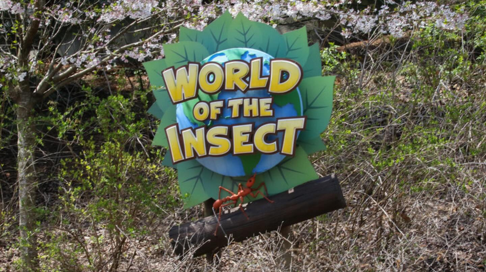

World Of The Insect
Cincinnati Zoo & Botanical Garden · Photo Tour #19

Insectariums are a little on the rare side to find, so Cincy decided to build one — and it became the very first major and permanent insect house at an American zoo, in 1978. You find it past the Passenger Pigeon Memorial; if you find a building shaped like a bunker, you have arrived.
Eight sections walk you through the insect world: what an insect is (orchid mantis, Mexican red-knee tarantula), how they move and reproduce, what they eat, insects as food — with chuckwallas, frogs and newts among the hunters — defence and escape, insects in water, egg to adult, and insect lifestyles, ending with the leaf-cutter ants. Next to the water section, keep an eye out for the naked mole rats, one of the most insect-like mammals.
Lastly there's a small walk-through butterfly aviary, a nice touch — and my thanks to my zoo buddy Josh Young for helping me get some of the pictures.
Louie posted this on Facebook — open the original post → · same tour on Instagram